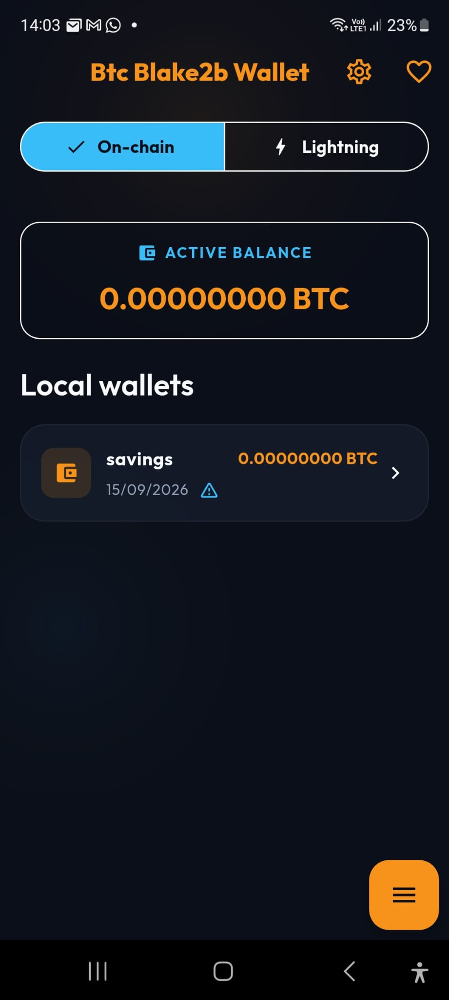
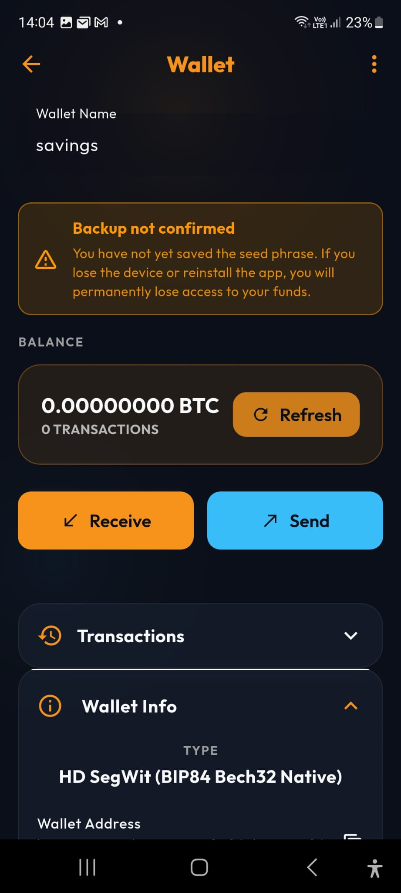
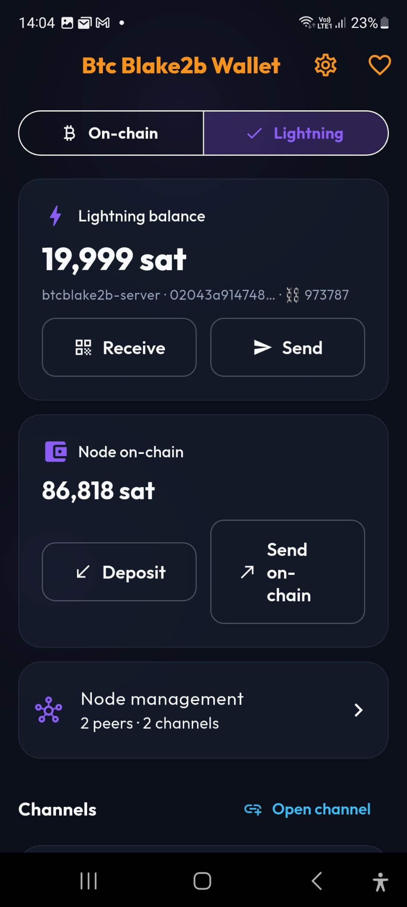

🔒 Security first
AES-GCM encrypted seed in secure storage, root/jailbreak detection, screen protection and APK integrity checks.
Bitcoin-blake2b mainnet · BIP-110 · self-custody
Btc Blake2b Wallet is a local, self-custodial wallet for bitcoin-blake2b mainnet. Your keys stay on your device and are never sent to the author's servers. No token, no ICO, no backend: only open-source software you control.
MIT licensed · Signed APK · SHA-256 published
⚠️ Experimental network: understand the risks before using it.
AES-GCM encrypted seed in secure storage, root/jailbreak detection, screen protection and APK integrity checks.
100% local wallet. No data goes to the author's servers: only the public APIs needed for balance and history.
Import an xpub to monitor an external wallet without ever exposing private keys.
Supports BIP84, BIP49 and BIP44. SIGHASH_UNIFIED helps reduce replay risk, but the network has no consensus-level replay protection.
Control your own Lightning node remotely with the app. No node? An experimental atomic swap with a provider pays the invoice while your funds stay in your on-chain wallet (testing phase).
Every receive and change address with its on-chain state, derivation path and balance, plus a read-only UTXO view.
Guided onboarding, confirmed backups, coin control, RBF fee bump, batch send to up to 20 recipients in one payment, private notes on transactions, CSV/JSON history export, QR send/receive and 7 languages.
MIT licensed. No paid features, accounts or paywalls. Donations are voluntary gifts.



Bitcoin-blake2b is a separate experimental network. Understand the risks before using funds.
Write your seed on paper, verify the backup and never store it in screenshots or cloud storage.
Verify the network, address, amount and fee before signing or broadcasting a transaction.
No. It supports bitcoin-blake2b, a network separate from Bitcoin. Coins and transactions are not interchangeable.
No. The app is self-custodial. If you lose your seed and device, recovering your funds may be impossible.
For balance, fees and history the app queries one public API (mempool.guide). If that service is unavailable, the app may query two community Esplora-compatible mirrors (mempool.kilombino.com, mempool.maveth.ca). This can be turned off in Settings. If you enable the automatic price in Settings, the app reads the last XBT/USDC trade from neoxa.exchange (NeoXEX) on demand. If the value currency is not USD, it also reads the USDT exchange rates from api.coinbase.com. Both can be turned off in Settings. These requests may expose your IP address and the queried public address to the provider.
No consensus-level protection. The app signs with SIGHASH_UNIFIED to reduce the risk, but always verify network and addresses.